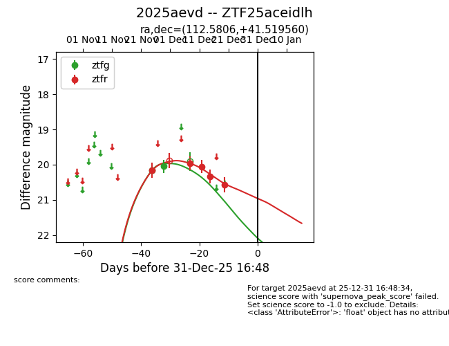
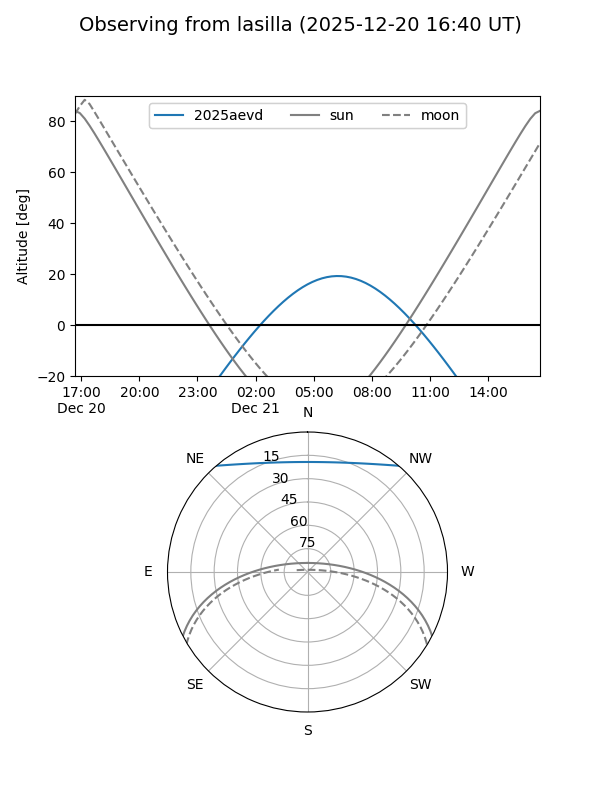
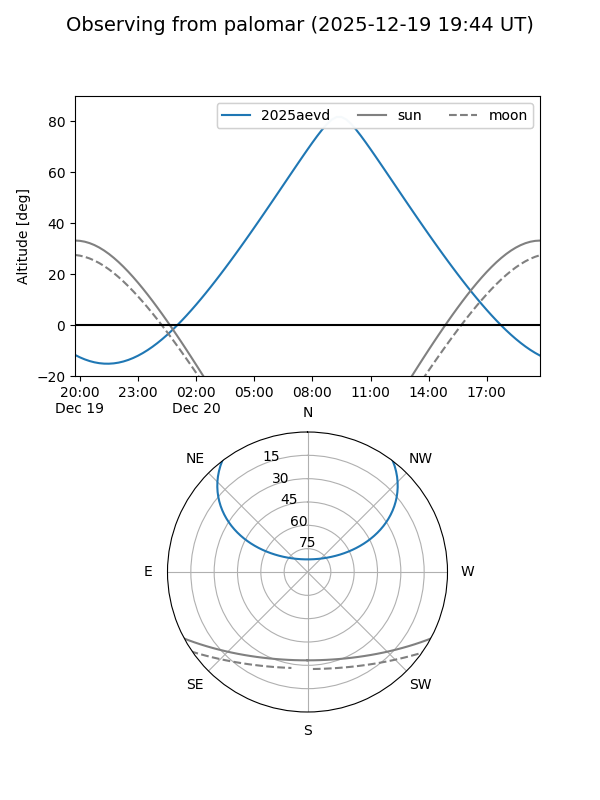
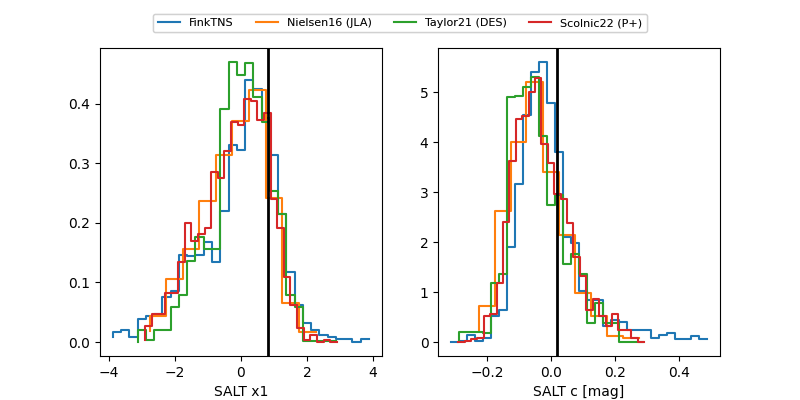

2025aevd
Target 2025aevd at 2025-12-22 14:03
Aliases and brokers:
FINK: fink-portal.org/ZTF25aceidlh
Lasair: lasair-ztf.lsst.ac.uk/objects/ZTF25aceidlh
ALeRCE: alerce.online/object/ZTF25aceidlh
TNS: wis-tns.org/object/2025aevd
YSE: ziggy.ucolick.org/yse/transient_detail/2025aevd
alt names
ZTF25aceidlh (ztf,fink_ztf)
2025aevd (tns,yse)
Coordinates:
equatorial (ra, dec) = 112.5806,+41.51956
equatorial (HMS+DMS) = 07:30:19.34,+41:31:10.42
galactic (l, b) = (177.1290,+24.50528)
Flags:
Photometry:
last ztfg=20.05, ztfr=20.57
2 ztfg, 5 ztfr detections
Lightcurve

Visibility


Additional plots
